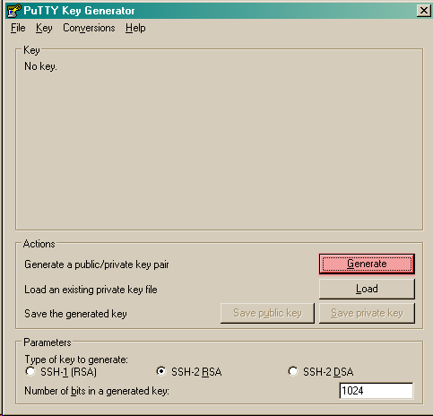
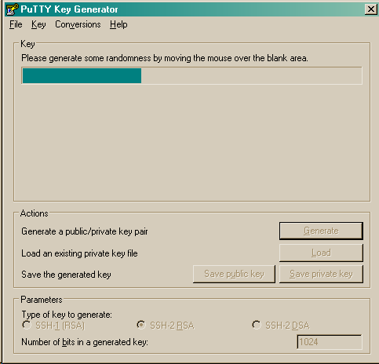

1 Introduction
EmacsPortable.App attempts to make a portable version of Emacs that runs off a USB drive under either Windows, Linux, or Mac OSX.
The features of this distribution:
- Automatic Registering of extensions (and org-protocol)
- Will use LiberKey when requested (Windows)
- Will generate an appropriate Info.plist for Mac OS X
- No support under Linux
- Temporarily Install of fonts
- Temporarily install fonts on windows so you can always carry your favorite mono-spaced font
- Copy the fonts to ~/Library/Fonts under Mac OSX
- The fonts you use should be free, so you are not copying fonts that should not be copied
- Currently no support under Linux
Window Only Features:
- Psuedo-Daemon
- Finding support applications and dictionaries
- Starting gdb or attaching debugger
- Updating and downloading the latest emacs, even if EmacsPortable.App hasn't released a new launcher.
In windows, this distribution also allows concurrent versions of emacs to be run, with different startup options.
2 Download
2.1 Download for Emacs 24
The following downloads are available:
2.2 Using Pre-releases
Under windows, you can do a net-install by using EmacsOptions. This net install can be performed in two ways:
- Select the option for a network-based install
- Move the
EmacsOptions.exeoutside of the EmacsPortableApp directory and run it. This allows you to distribute the network install file anywhere and allow other people to download/build their own EmacsPortable.App.
3 Options
3.1 Associations
EmacsPortable.App handles file associations in the following ways:
- Associations through LiberKey
- PortableApps.com specifictaion (when PortableApps supports association)
- Registering Associations when running.
When changing associations under windows, the Mac Info.plist xml
file is also updated.
In addition to regular extensions, EmacsPortable.App can be registered to extensionless files. Currently this is unsupported through liberkey. Therefore, this is only in effect when EmacsPortableApp is running or installed locally.
3.2 Proxy
This allows proxy settings to be dynamically determined based on your location. Your password is encrypted based on the location as well. This works on windows only.
EmacsPortable.App will setup the HTTPS_PROXY, HTTP_PROXY and
FTP_PROXY based on the connection specific setup.
To use a proxy, set it up with EmacsOptions.exe.
This is sufficient for some packages, but not for gnus.
The information is stored by the blowfish encryption algorithm.
However the HTTP_PROXY environment variable will contain the
password in clear text.
When Putty Key is specified in this dialog, the putty key is loaded and Putty local or portable is started (depending on the options selected).
3.3 Behavior
Under windows, launching options may be changed by running
EmacsOptions.exe. Otherwise, ini files can be edited on Mac OSX.
3.3.1 Launching Options
- Emacs Version
This selects the version of Emacs that EmacsPortable.App will be running. This is useful if you run different versions of Emacs to test lisp code on multiple emacs versions.
- Startup Script
Emacs allows you to select popular startup scripts for emacs startup. Once downloaded, you can use:- Prelude
- Emacs 24 Starter Kit
- Ergoemacs
- Kicker
You can also create you own. Just place an
init.elor.emacsin a directory underData/startup/
- Pseudo Daemon
The Pseudo-Daemon Start-up script among other things:- Opens Emacs
- Renames the current Frame
- Creates a New frame
- Calls an external program (ahk) that hides the frame & puts an Emacs icon in the task bar to allow this frame to be shown or closed
- Once Emacs has started up, subsequent calls to the Emacs start-up script open a new frame.
This allows you to "close" out of Emacs while maintaining a running Emacs.
The startup script also sets the environment variable EMACSSERVERFILE to the temporary directory
$TEMP\ep\EmacsPortable.App-Server-$EMACS_VERSION\serverSubsequent calls to emacsclient.exe specify this server location. Therefore an emacs server can be run for each distinct emacs version
More information about the startup is found in site-start.org
- New frame on file open
Create a new emacs "frame" on opening a new file.
- Debug startup
Under windows, debug mode startsgdbif found. Additionally, ifApp/gdbinitis found, gdb sources this before running emacs. You can download an appropriate gdbinit for emacs here.This is equivalent to using
EmacsDebug.exe
- Unzip binaries and run from temporary directory
Emacs binaries can be zipped to save space. This requires that the emacs binaries are extracted to the temporary directory before running. I have found that running emacs in this manner is faster than running it on the USB stick alone. If not selected the binaries will run from the usb drive. If you are running EmacsPortable.App locally
- Clean residual files
When running portably, the unzipped binaries are stored in the temporary directory. To save time on startup, if the bare binaries needed to run emacs are still present, the launcher uses these files in the temporary directory.When the clean residual files option is selected, these binaries are removed after emacs stops, otherwise they are retained to improve startup time.
- Home directory
TheHOMEDirectory is where Emacs stores the.emacsfile; Other emacs programs also store information here. EmacsPortable.App has a few options for home directoriesEXEDIR Alias
If the
Data/ini/EmacsPortableApp.inifile contains an ini Home Entry[EmacsPortableApp] Home=EXEDIR:/Data/Home
The EXEDIR directory is changed for the base directory that EmacsPortable.App is run from.
The advantage to this methodology is that you can drag and drop Emacs and all your customizations will be dragged with it.
USB Alias
If the
Data/ini/EmacsPortableApp.inifile contains an ini Home Entry[EmacsPortableApp] Home=USB:/Documents/
USB represents the USB directory. This setting uses the PortableApps Documents Directory as the home-directory.
The USB directory is determined as follows:
- Under Windows
- Checks each removable and hard drive for an
.emacsor_emacsfile under the specified directory. For example EmacsPortable.App would checke:\Documents\.emacsandf:\Document\.emacs. If it foundf:\Document\.emacs, If it exists, it assumes that the USB drive isf:\ - Checks each drive for a
PortableAppsdirectory. If found it assumes that this is the usb drive - Checks for
Apps,=EmacsPortable.App= orPortableApps,LiberKey\Apps, etc (the directories found in App/paths.ini portable.dirs). When found, EmacsPortable.App assumes the drive where the directory is found is the USB drive. - If not found, it will set the USB directory to the installed directory.
- Checks each removable and hard drive for an
- Under Mac OS X
- Assumes the usb directory is the
/Volumes/USB-NAME/directory.
- Assumes the usb directory is the
The advantage of this methodology is that under windows, Emacs can be copied to the hard-drive to speed up the run-time, and the initialization from the hard drive.
Home if Exists
If the
Data/ini/EmacsPortableApp.inifile contains a full path, then the home is set when that file exists. For example:[EmacsPortableApp] Home=c:\
will set the home directory to
c:\on Windows computers. Currently, this is supported only on windows.System home
If the
Data/ini/EmacsPortableApp.inifile contains an ini Home Entry that doesn't start with eitherEXEDIR:/orUSB:/, and doesn't exist then the original home directory is maintained.[EmacsPortableApp] Home=Set as original
Changing Home
When using EmacsOptions.exe, you do not have to worry about selecting which type of file is used. If you select a directory on the USB drive, the EmacsPortableApp is updated accordingly. If you select location within the portable app directory, the
EXEDIRis replaced. Note that any where else may change depending on the computer you use. - Under Windows
3.3.2 Integration Options
- Right-Click "Edit-With"
This allows a right click to produce a "Edit with EmacsPortable.App"
- Org-protocol
This registers Org-protocol and also associates org-protocol actions with adobe acrobat/adobe acrobat reader.
- Liberkey
EmacsPortable.App will add LiberKey File associations when it locates LiberKey, and the LiberKey support is checked. Note that you should restart LiberKey and make sure that the associations actually installed correctly.
3.4 Visual
This allows the initial font/color and gemoetry options to be specified so that emacs will startup with these options enabled.
These are called from the command line and do not affect the registry.
In addition this tries to set an option to maximize new frames.
3.5 Download
EmacsPortable.App can download and run the versions of Emacs from the mac repository and windows repository and package them so they work with the EmacsPortable.App launcher.
If the EmacsOptions list of emacs versions is out of date, it can be updated by the following procedure:
- Start EmacsPortable.App
- Type
M-x official-emacs
This will update the emacs list of official binaries from GNU Emacs For Mac OS X and GNU Emacs websites.
3.6 Network Install
3.7 Build Launcher
3.8 Unix Components
4 Customizing
4.1 Startup Customization
The EmacsOptions.exe allows you to set Emacs startup options via a
GUI. This is mirrored in the Data/ini/EmacsPortable.ini file.
4.2 Setting Startup Environment variables
By creating or editing an environment ini file at
Data/ini/Environment.ini, startup environmental variables may be set.
For example, if you use the colemak keyboard with the ergoemacs
package, the following ini-file will set the
ERGOEMACS_KEYBOARD_LAYOUT to the proper value
[Environment] ERGOEMACS_KEYBOARD_LAYOUT=colemak
4.3 Load Path
Load Path for source directory is in Data/src.
4.4 Literate Initialization
When using EmacsPortable.App's startup mechanism, t
- Any
.org,.elor.elcfiles inData/initand loads them - User-based
.org,.el, or.elcfiles inData/init/user. - System based
.org,.elor.elcfiles inData/init/system.
5 Configuration
Since EmacsPortable.App tries to run portably, there are a few things that are changed from a standard emacs distribution:
- Home directory is allowed to change based on different computers (USB is e:, f:, etc)
- Directories that change can become aliases for convenience and to allow recent files to save correctly (for instance ~usb for the usb drive).
- Install fonts on different computers to allow a favorite font to be used in emacs for all distributions. In windows this is done by making the font available to windows during the session.
5.1 Emacs aliases
Emacs has a list of "home" directory aliases. The absolute directories are:
| Alias | True Directory | Directory Purpose |
|---|---|---|
| ~ahk/ | Other/source/ahk | AHK Sources Directory |
| ~app/ | App/ | EmacsPortable.App Application Files |
| ~doc/ | USB Drive Documents | Documents Directory |
| ~ep/ | . | EmacsPortable.App Directory |
| ~h/ | System Home Directory | System Home Directory |
| ~ini/ | Data/ini | EmacsPortable.App ini files |
| ~nsi/ | Other/source/nsi | NSIS Sources Directory |
| ~pa/ | USB Drive:/PortableApps | Portable Apps |
| ~shared/ | Data/start/shared | Shared Customizations |
| ~site-lisp/ | App/site-lisp | Site Lisp Directory |
| ~src/ | Data/src | EmacsPortable.App lisp source files |
| ~start/ | Data/start | EmacsPortable.App Customizations |
| ~system/ | Data/start/system | System-based Customizations |
| ~usb/ | USB Drive | USB Drive |
| ~user/ | Data/start/user | User-based Customizations |
Other aliases are added ~el-get/package/elpa is changed to ~elpa, as
if it were a symbolic link. Since symbolic links are not supported in
windows, this is handled by emacs only. This was implemented to allow
files to remain the same between file systems. ~usb/ will be the
same on every system.
In addition to these aliases, the following aliases are also defined:
~el-get, is an alias for the el-get package directory~elpa, is an alias for the user elpa package directory~themeor~themes, is an alias for the emacs24 themes directory, (as long as the themes directory is not theuser-emacs-directory).~snip,~snips,~snippets,~snippet, is an alias for yasnippets snippets.- All the startup scripts in
Data/starthave an alias created for them.
Custom aliases may be added by customizing EmacsPortable-aliases.
5.2 Font installation
Will install specific fonts, if needed.
5.3 Updating mirrors to the latest version of emacs
You can update the current list of supported emacs versions by
running emacs-portable-update-offical-emacs-releases.
6 How It Works
6.1 Fonts
6.1.1 Windows
Under windows the fonts in the App/fonts/ directory are temporarily
installed/registered. Once Emacs Exits, the fonts are unregistered.
6.1.2 Mac OS X
Copies fonts in the App/fonts/ directory to ~/Library/Fonts/
6.2 DOS Version
The dos version starts up emacs in a dos command prompt window. When
trying to do anything with the EmacsPortableDOS command, it will
attempt to do that command in the initial DOS box. This is just a
test environment, and is likely not very reasonable to use.
6.3 Icons
Icons came from various places:
- Download Icon
- USB Icon
- Modified Lady Bug http://www.clker.com/clipart-23283.html
- Modified Uninstall Icon (original at http://findicons.com/icon/127390/trash_empty)
- Dos Box/Terminal http://www.clker.com/clipart-3716.html
- Wrench http://www.clker.com/clipart-3716.html
- Screw Driver http://www.clker.com/clipart-14895.html
6.4 NSIS Configuration
EmacsPortable.App is built with NSIS with the following options:
- NSIS 2.46
- Large String Support http://nsis.sourceforge.net/Special_Builds#Large_strings
- EnumINI http://nsis.sourceforge.net/EnumINI_plug-in
- Inetc http://nsis.sourceforge.net/Inetc_plug-in
- Execdos http://nsis.sourceforge.net/ExecDos_plug-in
- Blowfish++ http://nsis.sourceforge.net/mediawiki/images/a/a7/BlowfishDLL.7z
- MD5 http://nsis.sourceforge.net/MD5_plugin
- XML http://nsis.sourceforge.net/XML_plug-in
- FindProcDLL http://nsis.sourceforge.net/FindProcDLL_plug-in
- LoadingBar UI http://nsis.sourceforge.net/LoadingBar_UI
7 Applications Support
7.1 Adding Paths (Windows Only)
Most of the specific applications work by adding paths and changing
environmental variables. This is controlled by App/ini/paths.ini.
EmacsPortableApp looks at the following sections
7.1.1 General Paths
- Local Paths [local]
Local paths are paths that emacs checks that are locally available. They are specified by NAME=Local Path Snippet. An example of this is:[local] git=msysgit\msysgit\bin git2=msysgit\bin gitmsys=msysgit\msysgit\mingw\bin gitmsys2=msysgit\mingw\bin
In this example
gitThe following paths are checked:c:\msysgit\msysgit\bin- The root is set to
c:\
- The root is set to
%ProgramFiles%\msysgit\msysgit\bin- The root is set to
%ProgramFiles%
- The root is set to
If they exist they are added to the path environment before starting emacs. If the directory in fact exists, then two additional ini sections are checked,
[local.git.path]and[local.git.set].For the
gitlocal setup, there are two sections. The firstlocal.git.pathis specified as follows:[local.git.path] git_install_root=msysgit\msysgit
Then each key is added to the environment putting the root location before the right handed value. In this case, the environmental variable is set to
c:\msysgit\msysgitor%ProgramFiles%\msysgit\msysgitdepending on which path was found.The other type of section that is used is the
[local.git.set]. In the case ofgitthis section is defined as:[local.git.set] PLINK_PROTOCOL=ssh
Therefore, if
gitis found then the environmental variablePLINK_PROTOCOLis set tossh.
- Portable Paths [portable]
The portable paths are set in the same way as the local paths with the exception of the places they check for the existence of paths. Theportablesection checks for paths inUSB:\, andUSB:\PortableApps\.
- Relative Paths [exedir]
Theexedirsection checks for paths relative to the portable application.
7.1.2 Info Paths
Emacs uses Info for most everything. You can add info paths that
Emacs doesn't know about by a similar manner as the general paths,
above.
7.1.3 Unix Manual Paths
7.2 Java-based Apps
7.3 Imagemagick
Imagemagick is used for many Emacs Applications. EmacsPortableApp attempts to detect a portable version of EmacsPortableApp or see if Imagemagick is installed on the computer.
A portable version of Imagemagic is found at ftp.imagemagick.org
By extracting the portable version in the PortableApps or
LiberKey\MyApps EmacsPortable.App will add this to the path. This
assumes the Imagemagick directory is ImageMagick-6.7.9-3
7.4 Python based Apps
By installing Python Portable into your PortableApps Directory,
python is available to Emacs. This is useful for installing Bazaar,
which Emacs uses as its version control.
7.5 Version control Software
7.5.1 Bazaar
I have created a portable Bazaar. EmacsPortable.App will recognize bazaar version
7.5.2 Subversion in Windows
Not quite portable, but you can get the binaries here.
Running in subversion from within EmacsPortable.App is portable,
though. Emacs will set the %AppData% Environment variable to
Data/AppData and set %ALLUSERSPROFILE% to Data/AppData
7.5.3 Git
EmacsPortable.App picks up both Git portable and locally installed installations. Because of emacs version control, if Git is not installed locally, Emacs is slowed down substantially.
7.6 SumatraPDF Portable
Using AUCTeX inverse-search and forward search is supported with SumatraPDFPortable. There should be no set-up, EmacsPortable.App with setup both Emacs and SumatraPDFPortable.
7.7 GPG for encryption
EmacsPortableApp looks for the gpg package that is installed with Mozilla Thunderbird. First install Thunderbird Portable:
http://portableapps.com/support/thunderbird_portable
Then install gpg from here
http://portableapps.com/support/thunderbird_portable#encryption
7.8 MikTeX Portable
If you extract MikTeX portable to PortableApps/MikTexPortable/,
EmacsPortable.App will be recognized and used.
7.9 Unix Ports
7.9.1 Cygwin
7.9.2 MSYS
Supports MSYS portable.
7.9.3 GnuWin32
7.9.4 EzWin
7.10 PuTTY
7.10.1 PuTTY and magit
Since magit and OpenSSH does not work correctly in windows, you can use PuTTY to connect to your host via plink. Note that you must connect to the host first via PuTTY or you will get one of the following error messages:
The server's host key is not cached in the registry. You have no guarantee that the server is the computer you think it is. The server's rsa2 key fingerprint is: ssh-rsa 2048 00:00:00:00:00:00:00:00:00:00:00:00:00:00:00:00 Connection abandoned. fatal: The remote end hung up unexpectedly
or
WARNING - POTENTIAL SECURITY BREACH! The server's host key does not match the one PuTTY has cached in the registry. This means that either the server administrator has changed the host key, or you have actually connected to another computer pretending to be the server. The new rsa2 key fingerprint is: ssh-rsa 2048 00:00:00:00:00:00:00:00:00:00:00:00:00:00:00:00 Connection abandoned. fatal: The remote end hung up unexpectedly
The information about setting up GIT to use putty are located here.
http://sitaramc.github.com/gitolite/contrib_putty.html
This is done automatically when running TRAMP.
Therefore, if you want to use magit for github, you need open
puttyportable and attempt to open git@github.com so it can cache the
host id.
7.10.2 PuTTY and Tramp
From Jeremy Engilsh there is a tutorial on how to get TRAMP to work with windows 2K. This is adapted from that tutorial.
EmacsPortable.App will download and setup the appropriate files for PuTTY portable, if you need them. In addition to putty.exe, you will need:
- puttygen.exe
- pageant.exe
- plink.exe
- Generate a Key
Use Puttygen to generate a key. Puttygen should be in the PuttyPortable application.
 
- Save the public key
This is under File->Save Private Key
- Export the key to an open ssh key.
This is under Conversions->Export OpenSSH Key
- Copy the key to the server.
This can be done with a secure file transfer like FileZilla.
Or, if ssh is working for you, you can use the following shell command
scp key user@host:~/
- Log into the host and add to authorized keys
ssh example.server.com mkdir ~./ssh chmod 700 ~/.ssh cat ~/key >> ~/.ssh/authorized_keys chmod 600 ~/.ssh/authorized_keys rm ~/key
- Let EmacsPortable.App know about the key
Use EmacsOptions.exe to select the PuTTy key. If you want it to be portable keep the key on the USB drive OR in the executable directory.
- Run EmacsPortable.App.
EmacsPortable.App will start
pageant.exeif it is not already running and set up tramp to use plink. This is done by the site-start.
7.10.3 PuTTYPortable
To use the settings of PuTTYPortable, you have to have a PuTTYPortable session open.
7.10.4 PuTTY and Proxy settings
PuTTY currently stores proxy settings in the registry. If EmacsPortable.App is started up AND PuTTY Pageant has not started up, then:
- EmacsPortable.App will run Paegeant Portable
- Just after launching emacs, EmacsPortable.App will write the Proxy settings to the registry
- When you exit PuttyPortable, these settings will be saved.
Therefore, you do not need to always manually edit proxy settings, and plink should work most of the time.
7.10.5 PuTTY and R
R can connect to remote sessions using ssh.el. When you use PuTTY to connect you will need to set the following option:
(setq ssh-program "plink")
7.11 Bleeding edge emacs (Not supported yet)
These are notes to use the bleeding edge emacs.
Goto the App directory, and under a command prompt that has bzr installed, type
bzr branch --stacked bzr://bzr.savannah.gnu.org/emacs/trunk emacs-bzr
If that has already been performed, to update just type:
bzr pull
If you are behind a firewall you may wish to use git to get the latest sources. Note that only the Bazaar repo is the official
git clone http://git.savannah.gnu.org/r/emacs.git emacs-git
8 Building an installer
You can build an installer with the command build-nsi inside emacs.